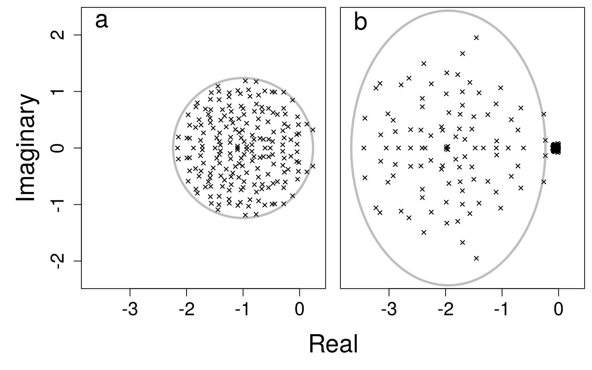
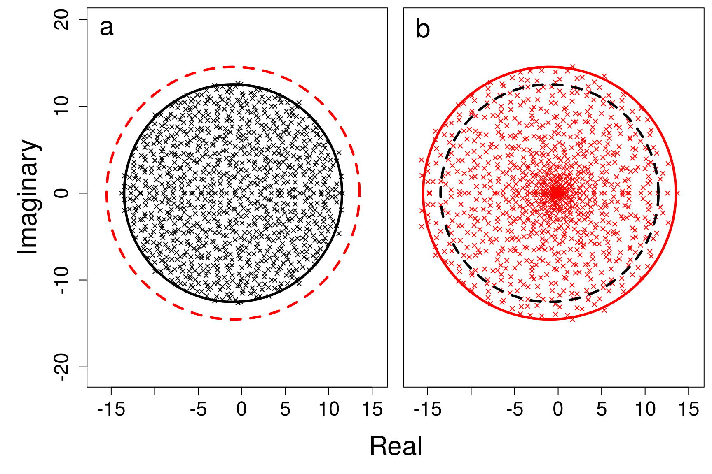
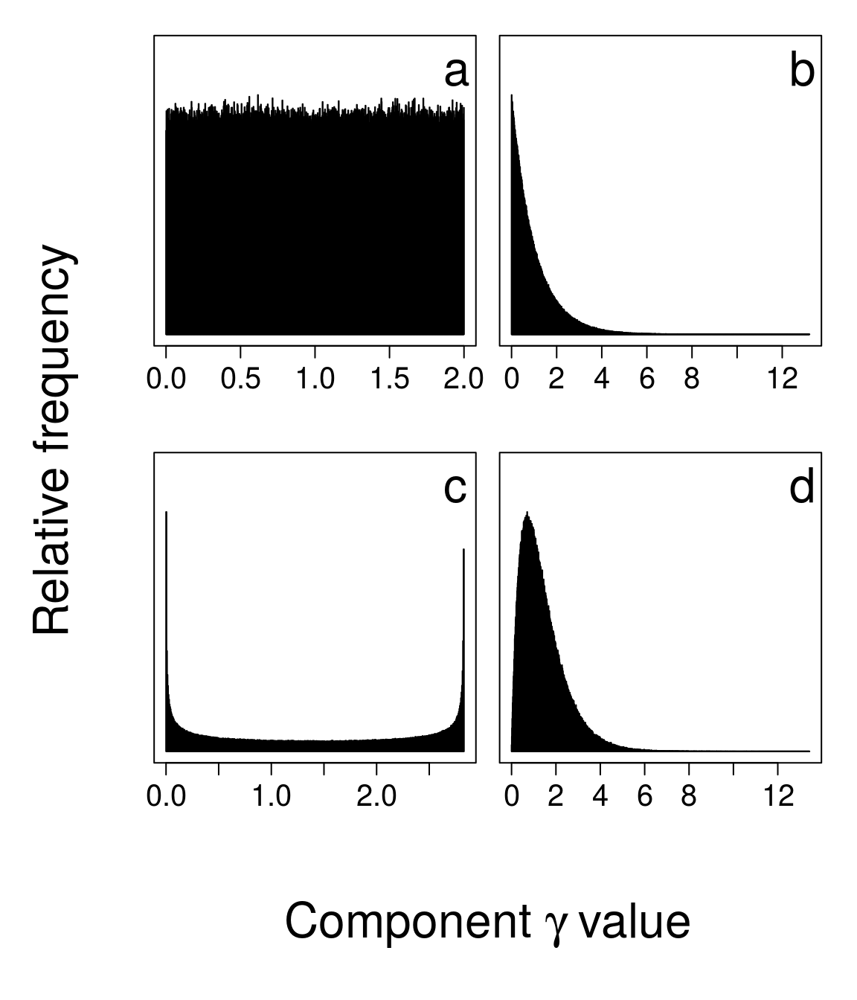
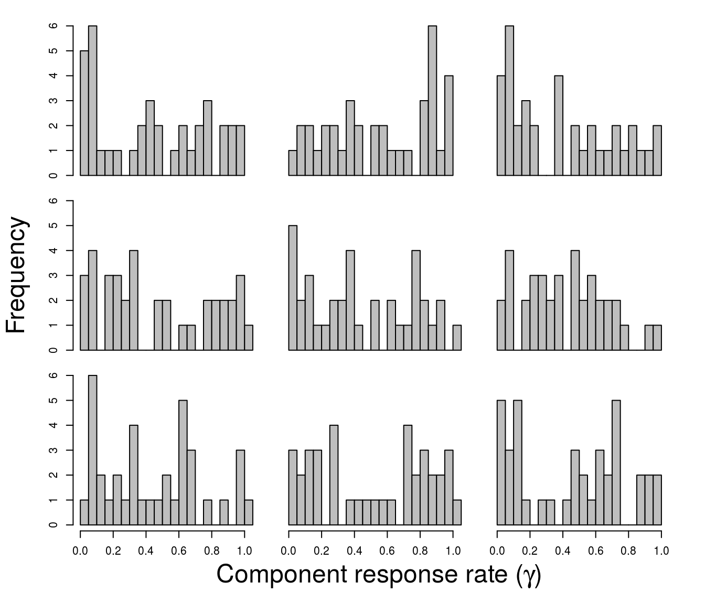

SI.RmdThis supplemental information supports the manuscript “Component response rate variation drives stability in large complex systems” with all of the code required to recreate the analysis in the main text, and with additional analyses to support its conclusions. All text, code, and data underlying this manuscript are publicly available on GitHub as part of the RandomMatrixStability package.
The RandomMatrixStability package includes all functions and tools for recreating the text, this supplemental information, and running all code; additional documentation is also provided for functions as part of the package. The RandomMatrixStability package package is available on GitHub; to download it, the devtools library is needed.
install.packages("devtools");
library(devtools);The code below installs the RandomMatrixStability package using devtools.
install_github("bradduthie/RandomMatrixStability");While downloading this package is recommended, all relevant code is also reproduced below with explanation, so it is possible to recreate all analyses using only this supplemental information.
In a synthesis of eco-evolutionary feedbacks on community stability, Patel et al. model a system that includes a vector of potentially changing species densities (\(\mathbf{N}\)) and a vector of potentially evolving traits (\(\mathbf{x}\))1. For any species \(i\) or trait \(j\), change in species density (\(N_{i}\)) or trait value (\(x_{j}\)) with time (\(t\)) is a function of the vectors \(\mathbf{N}\) and \(\mathbf{x}\),
\[\frac{dN_{i}}{dt} = N_{i}f_{i}(\mathbf{N}, \mathbf{x}),\]
\[\frac{dx_{j}}{dt} = \epsilon g_{j}(\mathbf{N}, \mathbf{x}).\]
In the above, \(f_{i}\) and \(g_{j}\) are functions that define the effects of all species densities and trait values on the density of a species \(i\) and the value of trait \(j\), respectively. Patel et al. were interested in stability when the evolution of traits was relatively slow or fast in comparison with the change in species densities1, and this is modulated in the above by the scalar \(\epsilon\). The value of \(\epsilon\) thereby determines the timescale separation between ecology and evolution, with high \(\epsilon\) modelling relatively fast evolution and low \(\epsilon\) modelling relative slow evolution1.
I use the same principle that Patel et al. use to modulate the relative rate of evolution to modulate rates of component responses for \(S\) components. Following May2,3, the value of a component \(i\) at time \(t\) (\(v_{i}(t)\)) is affected by the value of \(j\) (\(v_{j}(t)\)) and \(j\)’s marginal effect on \(i\) (\(m_{ij}\)), and by \(i\)’s response rate (\(\gamma_{i}\)),
\[\frac{dv_{i}(t)}{dt} = \gamma_{i} \sum_{j=1}^{S}m_{ij}v_{j}(t).\]
In matrix notation3,
\[\frac{d\mathbf{v}(t)}{dt} = \mathbf{\gamma} \mathbf{M}\mathbf{v}(t).\]
In the above, \(\mathbf{\gamma}\) is a diagonal matrix in which elements correspond to individual component response rates. Therefore, \(\mathbf{\gamma} \mathbf{M}\) modulates the values of components and can be analysed using the techniques of May2,3.
The sample \(M\) used for the eigenvalue distributions in Fig. 1 of the text is available on GitHub, and was produced by running the following function.
find_bgamma <- function(S = 200, C = 0.05, Osd = 0.4, iters = 10000){
while(iters > 0){
A_dat <- rnorm(n = S * S, mean = 0, sd = Osd);
A_mat <- matrix(data = A_dat, nrow = S);
C_dat <- rbinom(n = S * S, size = 1, prob = C);
C_mat <- matrix(data = C_dat, nrow = S, ncol = S);
A_mat <- A_mat * C_mat;
gammas <- c(rep(1.95, S/2), rep(0.05, S/2))
mu_gam <- mean(gammas);
diag(A_mat) <- -1;
A1 <- gammas * A_mat;
A0 <- mu_gam * A_mat;
A0_e <- eigen(A0)$values;
A0_r <- Re(A0_e);
A0_i <- Im(A0_e);
A1_e <- eigen(A1)$values;
A1_r <- Re(A1_e);
A1_i <- Im(A1_e);
if(max(A0_r) >= 0 & max(A1_r) < 0){
return(list(A0 = A0, A1 = A1));
break;
}
print(iters);
iters <- iters - 1;
}
}The above find_bgamma function terminates when a matrix \(M\) is found that is not stable when all component response rates are set to \(\gamma = 1\), but is stable when half of component response rates are \(1.95\) and half are \(0.05\). The function is used to illustrate the concept of how fast versus slow component responses can cause a system to become stable. Simulations were run for iter = 1000000, but terminated once an acceptable A0 and A1 were found. The code below plots the eigenvalue distributions of A0 and A1 in panels a and b, respectively. The plot itself can be recreated with the function and code below.

To find out how frequently \(M\) was stable given that all \(\gamma = 1\) versus \(\gamma = \{1.95, 0.05\}\), the function below was created.
stab_bgamma <- function(S = 200, C = 0.05, Osd = 0.4, iters = 10000){
ress <- matrix(data = 0, nrow = iters, ncol = 2);
A0_count <- 0;
A1_count <- 0;
while(iters > 0){
A_dat <- rnorm(n = S * S, mean = 0, sd = Osd);
A_mat <- matrix(data = A_dat, nrow = S);
C_dat <- rbinom(n = S * S, size = 1, prob = C);
C_mat <- matrix(data = C_dat, nrow = S, ncol = S);
A_mat <- A_mat * C_mat;
gammas <- c(rep(1.95, S/2), rep(0.05, S/2))
mu_gam <- mean(gammas);
diag(A_mat) <- -1;
A1 <- gammas * A_mat;
A0 <- mu_gam * A_mat;
A0_e <- eigen(A0)$values;
A0_r <- Re(A0_e);
A0_i <- Im(A0_e);
A1_e <- eigen(A1)$values;
A1_r <- Re(A1_e);
A1_i <- Im(A1_e);
if(max(A0_r) < 0){
ress[iters, 1] <- 1;
A0_count <- A0_count + 1;
}
if(max(A1_r) < 0){
ress[iters, 2] <- 1;
A1_count <- A1_count + 1;
}
print(c(iters, A0_count, A1_count));
iters <- iters - 1;
}
return(ress);
}The above functions produced the bi_pr_st data.
bi_pr_st <- read.csv("sim_results/bi_gamma/bi_pr_st.csv");
pr_st <- bi_pr_st[,-1];The function stab_bgamma was run for iters = 1000000, and the resulting matrix ress was returned. Each row of ress represents a single \(M\) given \(\gamma = 1\) (column 1) versus \(\gamma = \{1.95, 0.05\}\) (column 2). Values of 0 indicate that \(M\) was found to be unstable (at least one real component of its eigenvalues greater than or equal to zero), whereas values of 1 indicate that \(M\) was found to be stable (all real components of eigenvalues are negative). The frequencies of stable \(M\) were 1 given \(\gamma = 1\) and 32 given \(\gamma = \{1.95, 0.05\}\), as reported in the main text and legend of Fig. 1 (raw data are available on GitHub).
Figure 2 of the main text shows eigenvalue distributions in a system where \(S = 1000\), \(C = 1\), and \(\sigma = 0.4\). Eigenvalues can be reproduced using the code below for when \(\gamma = 1\) (panel a) and \(\gamma \sim \mathcal{U}(0, 2)\) (panel b). The function below reproduces the figure.
plot_Fig_2 <- function(){
A_comp <- NULL;
A_dat <- rnorm(n = 1000000, mean = 0, sd = 0.4);
A_mat <- matrix(data = A_dat, nrow = 1000);
C_dat <- rbinom(n = 1000 * 1000, size = 1, prob = 1);
C_mat <- matrix(data = C_dat, nrow = 1000, ncol = 1000);
A_mat <- A_mat * C_mat;
gammas <- runif(n = 1000, min = 0, max = 2);
mu_gam <- mean(gammas);
diag(A_mat) <- -1;
A1 <- gammas * A_mat;
A0 <- mu_gam * A_mat;
A0_e <- eigen(A0)$values;
A0_r <- Re(A0_e);
A0_i <- Im(A0_e);
A1_e <- eigen(A1)$values;
A1_r <- Re(A1_e);
A1_i <- Im(A1_e);
A0_vm <- A0;
diag(A0_vm) <- NA;
A0vec <- as.vector(A0_vm);
A0vec <- A0vec[is.na(A0vec) == FALSE];
A1_vm <- A1;
diag(A1_vm) <- NA;
A1vec <- as.vector(A1_vm);
A1vec <- A1vec[is.na(A1vec) == FALSE];
par(mfrow = c(1, 2), mar = c(0.5, 0.5, 0.5, 0.5), oma = c(5, 5, 0, 0));
plot(A0_r, A0_i, xlim = c(-16.5, 15.5), ylim = c(-16.5,15.5), pch = 4,
cex = 0.7, xlab = "", ylab = "", cex.lab = 1.5, cex.axis = 1.5,
asp = 1);
vl <- seq(from = 0, to = 2*pi, by = 0.001);
x0 <- sqrt(1000) * sd(A0vec) * cos(vl) + mean(diag(A0));
y0 <- sqrt(1000) * sd(A0vec) * sin(vl);
x1 <- sqrt(1000) * sd(A1vec) * cos(vl) + mean(diag(A1));
y1 <- sqrt(1000) * sd(A1vec) * sin(vl);
text(x = -15.5, y = 19, labels = "a", cex = 2);
points(x = x0, y = y0, type = "l", lwd = 3);
points(x = x1, y = y1, type = "l", col = "red", lwd = 3, lty = "dashed");
plot(A1_r, A1_i, xlim = c(-16.5, 15.5), ylim = c(-16.5,15.5), pch = 4, cex = 0.7,
xlab = "", ylab = "", cex.lab = 1.5, cex.axis = 1.5, asp = 1, col = "red",
yaxt = "n");
text(x = -15.5, y = 19, labels = "b", cex = 2);
points(x = x1, y = y1, type = "l", col = "red", lwd = 3)
points(x = x0, y = y0, type = "l", lwd = 3, lty = "dashed");
mtext(side = 1, "Real", outer = TRUE, line = 3, cex = 2);
mtext(side = 2, "Imaginary", outer = TRUE, line = 2.5, cex = 2);
}
plot_Fig_2();
Figure 3 of the main text reports the number of stable random complex systems found over 1 million iterations. The data used to make this figure are read into R below.
dat <- read.csv(file = "sim_results/C_1/random_all.csv");
dat <- dat[,-1]; # Extra row-indicating column removedThe table below shows the results for all simulations of random \(M\) matrices at \(\sigma = 0.4\) and \(C = 1\) given a range of \(S = \{2, 3, ..., 49, 50\}\). In this table, the A0 refers to matrices where \(\gamma = 1\), while A1 refers to matrices after \(Var(\gamma)\) is added and \(\gamma \sim \mathcal{U}(0, 2)\). Each row summarises data for a given \(S\) over 1 million randomly simulated \(M\) (A0 and A1). The column A0_unstable shows the number of A0 matrices that are unstable, and the column A0_stable shows the number of A0 matrices that are stable (these two columns sum to 1 million). Similarly, the column A1_unstable shows the number of A1 matrices that are unstable and A1_stable shows the number that are stable. The columns A1_stabilised and A1_destabilised show how many A0 matrices were stabilised or destabilised, respectively, by \(Var(\gamma)\).
| S | A0_unstable | A0_stable | A1_unstable | A1_stable | A1_stabilised | A1_destabilised |
|---|---|---|---|---|---|---|
| 2 | 293 | 999707 | 293 | 999707 | 0 | 0 |
| 3 | 3602 | 996398 | 3609 | 996391 | 0 | 7 |
| 4 | 14937 | 985063 | 15008 | 984992 | 0 | 71 |
| 5 | 39289 | 960711 | 39783 | 960217 | 36 | 530 |
| 6 | 78845 | 921155 | 80207 | 919793 | 389 | 1751 |
| 7 | 133764 | 866236 | 136904 | 863096 | 1679 | 4819 |
| 8 | 204112 | 795888 | 208241 | 791759 | 5391 | 9520 |
| 9 | 288041 | 711959 | 291775 | 708225 | 12619 | 16353 |
| 10 | 384024 | 615976 | 384931 | 615069 | 23153 | 24060 |
| 11 | 485975 | 514025 | 481019 | 518981 | 35681 | 30725 |
| 12 | 590453 | 409547 | 577439 | 422561 | 48302 | 35288 |
| 13 | 689643 | 310357 | 669440 | 330560 | 57194 | 36991 |
| 14 | 777496 | 222504 | 751433 | 248567 | 60959 | 34896 |
| 15 | 850159 | 149841 | 821613 | 178387 | 58567 | 30021 |
| 16 | 905057 | 94943 | 877481 | 122519 | 51255 | 23679 |
| 17 | 943192 | 56808 | 919536 | 80464 | 40854 | 17198 |
| 18 | 969018 | 30982 | 949944 | 50056 | 30102 | 11028 |
| 19 | 984301 | 15699 | 970703 | 29297 | 20065 | 6467 |
| 20 | 992601 | 7399 | 983507 | 16493 | 12587 | 3493 |
| 21 | 996765 | 3235 | 991532 | 8468 | 7030 | 1797 |
| 22 | 998693 | 1307 | 995567 | 4433 | 3884 | 758 |
| 23 | 999503 | 497 | 997941 | 2059 | 1883 | 321 |
| 24 | 999861 | 139 | 999059 | 941 | 899 | 97 |
| 25 | 999964 | 36 | 999617 | 383 | 380 | 33 |
| 26 | 999993 | 7 | 999878 | 122 | 121 | 6 |
| 27 | 999995 | 5 | 999946 | 54 | 53 | 4 |
| 28 | 1000000 | 0 | 999975 | 25 | 25 | 0 |
| 29 | 1000000 | 0 | 999997 | 3 | 3 | 0 |
| 30 | 1000000 | 0 | 999999 | 1 | 1 | 0 |
| 31 | 1000000 | 0 | 999999 | 1 | 1 | 0 |
| 32 | 1000000 | 0 | 1000000 | 0 | 0 | 0 |
| 33 | 1000000 | 0 | 1000000 | 0 | 0 | 0 |
| 34 | 1000000 | 0 | 1000000 | 0 | 0 | 0 |
| 35 | 1000000 | 0 | 1000000 | 0 | 0 | 0 |
| 36 | 1000000 | 0 | 1000000 | 0 | 0 | 0 |
| 37 | 1000000 | 0 | 1000000 | 0 | 0 | 0 |
| 38 | 1000000 | 0 | 1000000 | 0 | 0 | 0 |
| 39 | 1000000 | 0 | 1000000 | 0 | 0 | 0 |
| 40 | 1000000 | 0 | 1000000 | 0 | 0 | 0 |
| 41 | 1000000 | 0 | 1000000 | 0 | 0 | 0 |
| 42 | 1000000 | 0 | 1000000 | 0 | 0 | 0 |
| 43 | 1000000 | 0 | 1000000 | 0 | 0 | 0 |
| 44 | 1000000 | 0 | 1000000 | 0 | 0 | 0 |
| 45 | 1000000 | 0 | 1000000 | 0 | 0 | 0 |
| 46 | 1000000 | 0 | 1000000 | 0 | 0 | 0 |
| 47 | 1000000 | 0 | 1000000 | 0 | 0 | 0 |
| 48 | 1000000 | 0 | 1000000 | 0 | 0 | 0 |
| 49 | 1000000 | 0 | 1000000 | 0 | 0 | 0 |
| 50 | 1000000 | 0 | 1000000 | 0 | 0 | 0 |
Overall, the ratio of stable A1 matrices to stable A0 matrices found is greater than 1 (compare column 5 to column 3), and this ratio increases with increasing \(S\) (column 1). Hence, more randomly created complex systems (\(M\)) are generated given variation in \(\gamma\) than when \(\gamma = 1\). The results underlying this table were produced with the rand_gen_var function below.
rand_gen_var <- function(max_sp, iters, int_type = 0, rmx = 0.4, C = 1){
tot_res <- NULL;
fea_res <- NULL;
for(i in 2:max_sp){
iter <- iters;
tot_res[[i-1]] <- matrix(data = 0, nrow = iter, ncol = 7);
fea_res[[i-1]] <- matrix(data = 0, nrow = iter, ncol = 7);
while(iter > 0){
r_vec <- rnorm(n = i, mean = 0, sd = rmx);
A0_dat <- rnorm(n = i * i, mean = 0, sd = 0.4);
A0 <- matrix(data = A0_dat, nrow = i, ncol = i);
A0 <- species_interactions(mat = A0, type = int_type);
C_dat <- rbinom(n = i * i, size = 1, prob = C);
C_mat <- matrix(data = C_dat, nrow = i, ncol = i);
A0 <- A0 * C_mat;
diag(A0) <- -1;
gam1 <- runif(n = i, min = 0, max = 2);
A1 <- A0 * gam1;
A0 <- A0 * mean(gam1);
A0_stb <- max(Re(eigen(A0)$values)) < 0;
A1_stb <- max(Re(eigen(A1)$values)) < 0;
A0_fea <- min(-1*solve(A0) %*% r_vec) > 0;
A1_fea <- min(-1*solve(A1) %*% r_vec) > 0;
if(A0_stb == TRUE){
tot_res[[i-1]][iter, 1] <- 1;
}
if(A1_stb == TRUE){
tot_res[[i-1]][iter, 2] <- 1;
}
if(A0_fea == TRUE){
fea_res[[i-1]][iter, 1] <- 1;
}
if(A1_fea == TRUE){
fea_res[[i-1]][iter, 2] <- 1;
}
iter <- iter - 1;
}
print(i);
}
all_res <- summarise_randmat(tot_res = tot_res, fea_res = fea_res);
return(all_res);
}The above function calls the two functions species_interactions and summarise_randmat, which are provided below.
species_interactions <- function(mat, type = 0){
if(type == 1){
mat[mat > 0] <- -1*mat[mat > 0];
}
if(type == 2){
mat[mat < 0] <- -1*mat[mat < 0];
}
if(type == 3){
for(i in 1:dim(mat)[1]){
for(j in 1:dim(mat)[2]){
if(mat[i, j] * mat[j, i] > 0){
mat[j, i] <- -1 * mat[j, i];
}
}
}
}
return(mat);
}
summarise_randmat <- function(tot_res, fea_res){
sims <- length(tot_res);
all_res <- matrix(data = 0, nrow = sims, ncol = 13);
for(i in 1:sims){
all_res[i, 1] <- i + 1;
# Stable and unstable
all_res[i, 2] <- sum(tot_res[[i]][,1] == FALSE);
all_res[i, 3] <- sum(tot_res[[i]][,1] == TRUE);
all_res[i, 4] <- sum(tot_res[[i]][,2] == FALSE);
all_res[i, 5] <- sum(tot_res[[i]][,2] == TRUE);
# Stabilised and destabilised
all_res[i, 6] <- sum(tot_res[[i]][,1] == FALSE &
tot_res[[i]][,2] == TRUE);
all_res[i, 7] <- sum(tot_res[[i]][,1] == TRUE &
tot_res[[i]][,2] == FALSE);
# Feasible and infeasible
all_res[i, 8] <- sum(fea_res[[i]][,1] == FALSE);
all_res[i, 9] <- sum(fea_res[[i]][,1] == TRUE);
all_res[i, 10] <- sum(fea_res[[i]][,2] == FALSE);
all_res[i, 11] <- sum(fea_res[[i]][,2] == TRUE);
# Feased and defeased
all_res[i, 12] <- sum(fea_res[[i]][,1] == FALSE &
fea_res[[i]][,2] == TRUE);
all_res[i, 13] <- sum(fea_res[[i]][,1] == TRUE &
fea_res[[i]][,2] == FALSE);
}
cnames <- c("N", "A0_unstable", "A0_stable", "A1_unstable", "A1_stable",
"A1_stabilised", "A1_destabilised", "A0_infeasible",
"A0_feasible", "A1_infeasible", "A1_feasible",
"A1_made_feasible", "A1_made_infeasible");
colnames(all_res) <- cnames;
return(all_res);
}Note that feasibility results were ommited for the table above, but are reported below.
While the foundational work of May2 applies broadly to complex networks, much attention has been given specifically to ecological networks of interacting species. In these networks, the matrix \(M\) is interpreted as a community matrix and each row and column is interpreted as a single species. The effect that the density of any species \(i\) has on the population dynamics of species \(j\) is found in \(M_{ij}\), meaning that \(M\) holds the effects of pair-wise interactions between \(S\) species4–6. While May’s original work2 considered only randomly assembled communities, recent work has specifically looked at more restricted ecological communities including competitive networks (all off-diagonal elements of \(M\) are negative), mutualist networks (all off-diagonal elements of \(M\) are positive), and predator-prey networks (for any pair of \(i\) and \(j\), the effect of \(i\) on \(j\) is negative and \(j\) on \(i\) is positive, or vice versa)4–7. In general, competitor and mutualist networks tend to be unstable, while predator-prey networks tend to be highly stabilising.
I investigated competitor, mutualist, and predator-prey networks following Allesina et al.4. To create these networks, I first generated a random matrix \(M\), then changed the elements of \(M\) accordingly. If \(M\) was a competitive network, then the sign of any positive off-diagonal elements was reversed to be negative. If \(M\) was a mutualist network, then the sign of any positive off-diagonal elements was reversed to be positive. And if \(M\) was a predator-prey network, then all \(i\) and \(j\) pairs of elements were checked; any pairs of the same sign were changed so that one was negative and the other was positive. The species_interaction function used to do this is below.
species_interactions <- function(mat, type = 0){
if(type == 1){
mat[mat > 0] <- -1*mat[mat > 0];
}
if(type == 2){
mat[mat < 0] <- -1*mat[mat < 0];
}
if(type == 3){
for(i in 1:dim(mat)[1]){
for(j in 1:dim(mat)[2]){
if(mat[i, j] * mat[j, i] > 0){
mat[j, i] <- -1 * mat[j, i];
}
}
}
}
return(mat);
} # Note: -1 values are added in the diagonal laterThis function was applied to all created matrices \(M\), then the number of stable \(M\) matrices was estimated exactly as it was in the main text for random matrices for values of \(S\) from 2 to 50 (100 in the case of the relatively more stable predator-prey interactions), except that only 100000 random \(M\) were generated instead of 1 million. This produced the data set below.
cdat <- read.csv(file = "sim_results/ecology/competition_C_1.csv");
mdat <- read.csv(file = "sim_results/ecology/mutualism_C_1.csv");
pdat <- read.csv(file = "sim_results/ecology/pred-prey_C_1.csv");The following tables for restricted ecological communities can therefore be compared with the random \(M\) results above (but note that counts from systems with comparable probabilities of stability will be an order of magnitude lower in the tables below due to the smaller number of \(M\) matrices generated). As with the results above, in the tables below, A0 refers to matrices when \(\gamma = 1\) and A1 refers to matrices after \(Var(\gamma)\) is added. The column A0_unstable shows the number of A0 matrices that are unstable, and the column A0_stable shows the number of A0 matrices that are stable (these two columns sum to 100000). Similarly, the column A1_unstable shows the number of A1 matrices that are unstable and A1_stable shows the number that are stable. The columns A1_stabilised and A1_destabilised show how many A0 matrices were stabilised or destabilised, respectively, by \(Var(\gamma)\).
Results for competitor interaction networks are shown below
| N | A0_unstable | A0_stable | A1_unstable | A1_stable | A1_stabilised |
|---|---|---|---|---|---|
| 2 | 48 | 99952 | 48 | 99952 | 0 |
| 3 | 229 | 99771 | 231 | 99769 | 0 |
| 4 | 701 | 99299 | 704 | 99296 | 0 |
| 5 | 1579 | 98421 | 1587 | 98413 | 0 |
| 6 | 3218 | 96782 | 3253 | 96747 | 6 |
| 7 | 5519 | 94481 | 5619 | 94381 | 23 |
| 8 | 9062 | 90938 | 9237 | 90763 | 77 |
| 9 | 13436 | 86564 | 13729 | 86271 | 230 |
| 10 | 18911 | 81089 | 19303 | 80697 | 505 |
| 11 | 25594 | 74406 | 25961 | 74039 | 1011 |
| 12 | 33207 | 66793 | 33382 | 66618 | 1724 |
| 13 | 41160 | 58840 | 41089 | 58911 | 2655 |
| 14 | 50575 | 49425 | 49894 | 50106 | 3777 |
| 15 | 59250 | 40750 | 57892 | 42108 | 4824 |
| 16 | 67811 | 32189 | 65740 | 34260 | 5634 |
| 17 | 75483 | 24517 | 73056 | 26944 | 5943 |
| 18 | 82551 | 17449 | 79878 | 20122 | 5780 |
| 19 | 88030 | 11970 | 85204 | 14796 | 5417 |
| 20 | 92254 | 7746 | 89766 | 10234 | 4544 |
| 21 | 95233 | 4767 | 93002 | 6998 | 3695 |
| 22 | 97317 | 2683 | 95451 | 4549 | 2803 |
| 23 | 98508 | 1492 | 97122 | 2878 | 1991 |
| 24 | 99240 | 760 | 98407 | 1593 | 1216 |
| 25 | 99669 | 331 | 99082 | 918 | 739 |
| 26 | 99871 | 129 | 99490 | 510 | 452 |
| 27 | 99938 | 62 | 99732 | 268 | 240 |
| 28 | 99985 | 15 | 99888 | 112 | 108 |
| 29 | 99990 | 10 | 99951 | 49 | 46 |
| 30 | 100000 | 0 | 99981 | 19 | 19 |
| 31 | 100000 | 0 | 99993 | 7 | 7 |
| 32 | 100000 | 0 | 99996 | 4 | 4 |
| 33 | 100000 | 0 | 99998 | 2 | 2 |
| 34 | 100000 | 0 | 100000 | 0 | 0 |
| … | … | … | … | … | … |
| 50 | 100000 | 0 | 100000 | 0 | 0 |
Results for mutualist interaction networks are shown below
| N | A0_unstable | A0_stable | A1_unstable | A1_stable | A1_stabilised |
|---|---|---|---|---|---|
| 2 | 56 | 99944 | 56 | 99944 | 0 |
| 3 | 3301 | 96699 | 3301 | 96699 | 0 |
| 4 | 34446 | 65554 | 34446 | 65554 | 0 |
| 5 | 86520 | 13480 | 86520 | 13480 | 0 |
| 6 | 99683 | 317 | 99683 | 317 | 0 |
| 7 | 99998 | 2 | 99998 | 2 | 0 |
| 8 | 100000 | 0 | 100000 | 0 | 0 |
| 9 | 100000 | 0 | 100000 | 0 | 0 |
| 10 | 100000 | 0 | 100000 | 0 | 0 |
| 11 | 100000 | 0 | 100000 | 0 | 0 |
| 12 | 100000 | 0 | 100000 | 0 | 0 |
| … | … | … | … | … | … |
| 50 | 100000 | 0 | 100000 | 0 | 0 |
Results for predator-prey interaction networks are shown below
| N | A0_unstable | A0_stable | A1_unstable | A1_stable | A1_stabilised |
|---|---|---|---|---|---|
| 2 | 0 | 100000 | 0 | 100000 | 0 |
| 3 | 0 | 100000 | 0 | 100000 | 0 |
| 4 | 0 | 100000 | 0 | 100000 | 0 |
| 5 | 1 | 99999 | 1 | 99999 | 0 |
| 6 | 4 | 99996 | 4 | 99996 | 0 |
| 7 | 2 | 99998 | 2 | 99998 | 0 |
| 8 | 5 | 99995 | 5 | 99995 | 0 |
| 9 | 20 | 99980 | 21 | 99979 | 0 |
| 10 | 20 | 99980 | 22 | 99978 | 0 |
| 11 | 38 | 99962 | 39 | 99961 | 0 |
| 12 | 64 | 99936 | 66 | 99934 | 0 |
| 13 | 87 | 99913 | 91 | 99909 | 0 |
| 14 | 157 | 99843 | 159 | 99841 | 0 |
| 15 | 215 | 99785 | 227 | 99773 | 0 |
| 16 | 293 | 99707 | 310 | 99690 | 0 |
| 17 | 383 | 99617 | 408 | 99592 | 0 |
| 18 | 443 | 99557 | 473 | 99527 | 3 |
| 19 | 642 | 99358 | 675 | 99325 | 4 |
| 20 | 836 | 99164 | 887 | 99113 | 7 |
| 21 | 1006 | 98994 | 1058 | 98942 | 10 |
| 22 | 1153 | 98847 | 1228 | 98772 | 20 |
| 23 | 1501 | 98499 | 1593 | 98407 | 30 |
| 24 | 1841 | 98159 | 1996 | 98004 | 40 |
| 25 | 2146 | 97854 | 2316 | 97684 | 58 |
| 26 | 2643 | 97357 | 2809 | 97191 | 119 |
| 27 | 3034 | 96966 | 3258 | 96742 | 158 |
| 28 | 3690 | 96310 | 3928 | 96072 | 201 |
| 29 | 4257 | 95743 | 4532 | 95468 | 290 |
| 30 | 4964 | 95036 | 5221 | 94779 | 424 |
| 31 | 5627 | 94373 | 5978 | 94022 | 452 |
| 32 | 6543 | 93457 | 6891 | 93109 | 666 |
| 33 | 7425 | 92575 | 7777 | 92223 | 818 |
| 34 | 8540 | 91460 | 8841 | 91159 | 1071 |
| 35 | 9526 | 90474 | 9842 | 90158 | 1337 |
| 36 | 10617 | 89383 | 10891 | 89109 | 1624 |
| 37 | 12344 | 87656 | 12508 | 87492 | 2021 |
| 38 | 13675 | 86325 | 13877 | 86123 | 2442 |
| 39 | 15264 | 84736 | 15349 | 84651 | 2870 |
| 40 | 17026 | 82974 | 17053 | 82947 | 3363 |
| 41 | 18768 | 81232 | 18614 | 81386 | 3905 |
| 42 | 20791 | 79209 | 20470 | 79530 | 4579 |
| 43 | 23150 | 76850 | 22754 | 77246 | 5217 |
| 44 | 25449 | 74551 | 24184 | 75816 | 6285 |
| 45 | 27702 | 72298 | 26464 | 73536 | 6754 |
| 46 | 30525 | 69475 | 28966 | 71034 | 7646 |
| 47 | 32832 | 67168 | 31125 | 68875 | 8487 |
| 48 | 36152 | 63848 | 33865 | 66135 | 9479 |
| 49 | 38714 | 61286 | 36242 | 63758 | 10125 |
| 50 | 41628 | 58372 | 38508 | 61492 | 11036 |
| 51 | 44483 | 55517 | 41023 | 58977 | 11704 |
| 52 | 48134 | 51866 | 44287 | 55713 | 12573 |
| 53 | 51138 | 48862 | 46721 | 53279 | 13223 |
| 54 | 54261 | 45739 | 49559 | 50441 | 13757 |
| 55 | 57647 | 42353 | 52403 | 47597 | 14324 |
| 56 | 60630 | 39370 | 55293 | 44707 | 14669 |
| 57 | 63647 | 36353 | 57787 | 42213 | 15103 |
| 58 | 66961 | 33039 | 60439 | 39561 | 15450 |
| 59 | 69968 | 30032 | 63708 | 36292 | 15246 |
| 60 | 72838 | 27162 | 66270 | 33730 | 15177 |
| 61 | 75609 | 24391 | 68873 | 31127 | 15006 |
| 62 | 77999 | 22001 | 71318 | 28682 | 14538 |
| 63 | 80616 | 19384 | 73517 | 26483 | 14510 |
| 64 | 83089 | 16911 | 76209 | 23791 | 13784 |
| 65 | 85150 | 14850 | 78086 | 21914 | 13412 |
| 66 | 86908 | 13092 | 80437 | 19563 | 12477 |
| 67 | 88671 | 11329 | 82379 | 17621 | 11718 |
| 68 | 90537 | 9463 | 84483 | 15517 | 10878 |
| 69 | 91969 | 8031 | 86233 | 13767 | 10033 |
| 70 | 93181 | 6819 | 87914 | 12086 | 9070 |
| 71 | 94330 | 5670 | 89200 | 10800 | 8401 |
| 72 | 95324 | 4676 | 90833 | 9167 | 7359 |
| 73 | 96143 | 3857 | 91805 | 8195 | 6726 |
| 74 | 96959 | 3041 | 93065 | 6935 | 5900 |
| 75 | 97543 | 2457 | 93987 | 6013 | 5222 |
| 76 | 97969 | 2031 | 94900 | 5100 | 4481 |
| 77 | 98497 | 1503 | 95756 | 4244 | 3809 |
| 78 | 98744 | 1256 | 96442 | 3558 | 3269 |
| 79 | 99045 | 955 | 96942 | 3058 | 2837 |
| 80 | 99276 | 724 | 97528 | 2472 | 2329 |
| 81 | 99481 | 519 | 97996 | 2004 | 1894 |
| 82 | 99556 | 444 | 98321 | 1679 | 1597 |
| 83 | 99691 | 309 | 98722 | 1278 | 1227 |
| 84 | 99752 | 248 | 98943 | 1057 | 1015 |
| 85 | 99833 | 167 | 99144 | 856 | 837 |
| 86 | 99895 | 105 | 99346 | 654 | 642 |
| 87 | 99925 | 75 | 99461 | 539 | 530 |
| 88 | 99945 | 55 | 99566 | 434 | 428 |
| 89 | 99976 | 24 | 99675 | 325 | 324 |
| 90 | 99977 | 23 | 99756 | 244 | 243 |
| 91 | 99982 | 18 | 99839 | 161 | 155 |
| 92 | 99988 | 12 | 99865 | 135 | 135 |
| 93 | 99994 | 6 | 99885 | 115 | 115 |
| 94 | 99993 | 7 | 99911 | 89 | 88 |
| 95 | 99998 | 2 | 99953 | 47 | 47 |
| 96 | 99999 | 1 | 99965 | 35 | 35 |
| 97 | 99999 | 1 | 99979 | 21 | 21 |
| 98 | 100000 | 0 | 99973 | 27 | 27 |
| 99 | 100000 | 0 | 99984 | 16 | 16 |
| 100 | 100000 | 0 | 99989 | 11 | 11 |
Overall, as expected4, predator-prey communities are relatively stable while mutualist communties are highly unstable. But interestingly, while \(Var(\gamma)\) stabilises predator-prey and competitor communities, it does not stabilise mutualist communities. This is unsurprising because purely mutualist communities are characterised by a very positive4 leading \(\Re(\lambda)\), and it is highly unlikely that \(Var(\gamma)\) alone will shift all real parts of eigenvalues to negative values.
In the main text, for simplicity, I assumed inter-connectivity values of \(C = 1\), meaning that all off-diagonal elements of a matrix \(M\) were potentially nonzero and sampled from a normal distribution \(\mathcal{N}(0, \sigma^{2})\) where \(\sigma = 0.4\). Here I present four tables showing the number of stable communities given \(C = \{0.3, 0. 5, 0.7, 0.9 \}\). In all cases, uniform variation in component response time (\(\gamma \sim \mathcal{U}(0, 2)\)) led to a higher number of stable communities than when \(\gamma\) did not vary (\(\gamma = 1\)). In contrast to the main text, 100000 rather than 1 million \(M\) were simulated. As with the results on stability with increasing \(S\) shown above, in the tables below A0 refers to matrices when \(\gamma = 1\), and A1 refers to matrices after \(Var(\gamma)\) is added. The column A0_unstable shows the number of A0 matrices that are unstable, and the column A0_stable shows the number of A0 matrices that are stable (these two columns sum to 100000). Similarly, the column A1_unstable shows the number of A1 matrices that are unstable and A1_stable shows the number that are stable. The columns A1_stabilised and A1_destabilised show how many A0 matrices were stabilised or destabilised, respectively, by \(Var(\gamma)\).
All data reported below for various values of \(C\) are accessible using the below.
C3dat <- read.csv(file = "sim_results/C_other/rand_c-0pt3.csv");
C5dat <- read.csv(file = "sim_results/C_other/rand_c-0pt5.csv");
C7dat <- read.csv(file = "sim_results/C_other/rand_c-0pt7.csv");
C9dat <- read.csv(file = "sim_results/C_other/rand_c-0pt9.csv");These objects C3dat, C5dat, C7dat, and C9dat include the results for \(C = 0.3\), \(C = 0.5\), \(C = 0.7\), and \(C = 0.9\), respectively.
| N | A0_unstable | A0_stable | A1_unstable | A1_stable | A1_stabilised | A1_destabilised |
|---|---|---|---|---|---|---|
| 2 | 5 | 99995 | 5 | 99995 | 0 | 0 |
| 3 | 6 | 99994 | 6 | 99994 | 0 | 0 |
| 4 | 24 | 99976 | 24 | 99976 | 0 | 0 |
| 5 | 59 | 99941 | 59 | 99941 | 0 | 0 |
| 6 | 98 | 99902 | 98 | 99902 | 0 | 0 |
| 7 | 160 | 99840 | 161 | 99839 | 0 | 1 |
| 8 | 290 | 99710 | 293 | 99707 | 0 | 3 |
| 9 | 430 | 99570 | 434 | 99566 | 0 | 4 |
| 10 | 648 | 99352 | 653 | 99347 | 1 | 6 |
| 11 | 946 | 99054 | 957 | 99043 | 0 | 11 |
| 12 | 1392 | 98608 | 1415 | 98585 | 4 | 27 |
| 13 | 2032 | 97968 | 2065 | 97935 | 5 | 38 |
| 14 | 2627 | 97373 | 2688 | 97312 | 10 | 71 |
| 15 | 3588 | 96412 | 3647 | 96353 | 35 | 94 |
| 16 | 5019 | 94981 | 5124 | 94876 | 51 | 156 |
| 17 | 6512 | 93488 | 6673 | 93327 | 79 | 240 |
| 18 | 8444 | 91556 | 8600 | 91400 | 165 | 321 |
| 19 | 10416 | 89584 | 10667 | 89333 | 244 | 495 |
| 20 | 13254 | 86746 | 13477 | 86523 | 425 | 648 |
| 21 | 16248 | 83752 | 16481 | 83519 | 642 | 875 |
| 22 | 19497 | 80503 | 19719 | 80281 | 929 | 1151 |
| 23 | 23654 | 76346 | 23776 | 76224 | 1368 | 1490 |
| 24 | 28485 | 71515 | 28389 | 71611 | 1914 | 1818 |
| 25 | 32774 | 67226 | 32483 | 67517 | 2428 | 2137 |
| 26 | 38126 | 61874 | 37411 | 62589 | 3221 | 2506 |
| 27 | 43435 | 56565 | 42418 | 57582 | 3828 | 2811 |
| 28 | 49333 | 50667 | 47840 | 52160 | 4565 | 3072 |
| 29 | 55389 | 44611 | 53381 | 46619 | 5329 | 3321 |
| 30 | 60826 | 39174 | 58388 | 41612 | 5918 | 3480 |
| 31 | 66820 | 33180 | 64043 | 35957 | 6345 | 3568 |
| 32 | 72190 | 27810 | 69036 | 30964 | 6685 | 3531 |
| 33 | 77053 | 22947 | 73587 | 26413 | 6826 | 3360 |
| 34 | 81816 | 18184 | 78157 | 21843 | 6673 | 3014 |
| 35 | 85651 | 14349 | 82041 | 17959 | 6383 | 2773 |
| 36 | 88985 | 11015 | 85657 | 14343 | 5721 | 2393 |
| 37 | 92072 | 7928 | 88805 | 11195 | 5180 | 1913 |
| 38 | 94329 | 5671 | 91444 | 8556 | 4451 | 1566 |
| 39 | 95912 | 4088 | 93295 | 6705 | 3804 | 1187 |
| 40 | 97232 | 2768 | 95201 | 4799 | 2967 | 936 |
| 41 | 98179 | 1821 | 96506 | 3494 | 2356 | 683 |
| 42 | 98826 | 1174 | 97489 | 2511 | 1786 | 449 |
| 43 | 99275 | 725 | 98312 | 1688 | 1251 | 288 |
| 44 | 99583 | 417 | 98872 | 1128 | 903 | 192 |
| 45 | 99776 | 224 | 99339 | 661 | 576 | 139 |
| 46 | 99865 | 135 | 99518 | 482 | 413 | 66 |
| 47 | 99938 | 62 | 99744 | 256 | 226 | 32 |
| 48 | 99956 | 44 | 99824 | 176 | 151 | 19 |
| 49 | 99980 | 20 | 99914 | 86 | 85 | 19 |
| 50 | 99993 | 7 | 99950 | 50 | 46 | 3 |
| 51 | 99998 | 2 | 99971 | 29 | 28 | 1 |
| 52 | 99998 | 2 | 99986 | 14 | 14 | 2 |
| 53 | 99999 | 1 | 99992 | 8 | 7 | 0 |
| 54 | 100000 | 0 | 99997 | 3 | 3 | 0 |
| 55 | 100000 | 0 | 99999 | 1 | 1 | 0 |
| 56 | 100000 | 0 | 99998 | 2 | 2 | 0 |
| 57 | 100000 | 0 | 99999 | 1 | 1 | 0 |
| 58 | 100000 | 0 | 100000 | 0 | 0 | 0 |
| … | … | … | … | … | … | … |
| 100 | 100000 | 0 | 100000 | 0 | 0 | 0 |
| N | A0_unstable | A0_stable | A1_unstable | A1_stable | A1_stabilised | A1_destabilised |
|---|---|---|---|---|---|---|
| 2 | 7 | 99993 | 7 | 99993 | 0 | 0 |
| 3 | 32 | 99968 | 32 | 99968 | 0 | 0 |
| 4 | 122 | 99878 | 122 | 99878 | 0 | 0 |
| 5 | 320 | 99680 | 321 | 99679 | 0 | 1 |
| 6 | 667 | 99333 | 673 | 99327 | 0 | 6 |
| 7 | 1233 | 98767 | 1252 | 98748 | 0 | 19 |
| 8 | 2123 | 97877 | 2156 | 97844 | 3 | 36 |
| 9 | 3415 | 96585 | 3471 | 96529 | 16 | 72 |
| 10 | 5349 | 94651 | 5450 | 94550 | 30 | 131 |
| 11 | 7990 | 92010 | 8185 | 91815 | 81 | 276 |
| 12 | 11073 | 88927 | 11301 | 88699 | 219 | 447 |
| 13 | 14971 | 85029 | 15204 | 84796 | 445 | 678 |
| 14 | 19754 | 80246 | 19992 | 80008 | 764 | 1002 |
| 15 | 25020 | 74980 | 25239 | 74761 | 1185 | 1404 |
| 16 | 30860 | 69140 | 30938 | 69062 | 1902 | 1980 |
| 17 | 37844 | 62156 | 37562 | 62438 | 2758 | 2476 |
| 18 | 44909 | 55091 | 44251 | 55749 | 3595 | 2937 |
| 19 | 52322 | 47678 | 51011 | 48989 | 4573 | 3262 |
| 20 | 60150 | 39850 | 58295 | 41705 | 5382 | 3527 |
| 21 | 67147 | 32853 | 64895 | 35105 | 5925 | 3673 |
| 22 | 74177 | 25823 | 71358 | 28642 | 6310 | 3491 |
| 23 | 80297 | 19703 | 77034 | 22966 | 6507 | 3244 |
| 24 | 85372 | 14628 | 82039 | 17961 | 6209 | 2876 |
| 25 | 89719 | 10281 | 86539 | 13461 | 5562 | 2382 |
| 26 | 92947 | 7053 | 90141 | 9859 | 4707 | 1901 |
| 27 | 95436 | 4564 | 92950 | 7050 | 3844 | 1358 |
| 28 | 97196 | 2804 | 95171 | 4829 | 2999 | 974 |
| 29 | 98300 | 1700 | 96842 | 3158 | 2115 | 657 |
| 30 | 99103 | 897 | 98033 | 1967 | 1466 | 396 |
| 31 | 99502 | 498 | 98665 | 1335 | 1068 | 231 |
| 32 | 99745 | 255 | 99185 | 815 | 696 | 136 |
| 33 | 99881 | 119 | 99572 | 428 | 375 | 66 |
| 34 | 99955 | 45 | 99788 | 212 | 191 | 24 |
| 35 | 99979 | 21 | 99900 | 100 | 95 | 16 |
| 36 | 99995 | 5 | 99950 | 50 | 50 | 5 |
| 37 | 99997 | 3 | 99970 | 30 | 28 | 1 |
| 38 | 99998 | 2 | 99986 | 14 | 13 | 1 |
| 39 | 99999 | 1 | 99991 | 9 | 9 | 1 |
| 40 | 100000 | 0 | 100000 | 0 | 0 | 0 |
| 41 | 100000 | 0 | 99999 | 1 | 1 | 0 |
| 42 | 100000 | 0 | 99999 | 1 | 1 | 0 |
| 43 | 100000 | 0 | 100000 | 0 | 0 | 0 |
| … | … | … | … | … | … | … |
| 50 | 100000 | 0 | 100000 | 0 | 0 | 0 |
| N | A0_unstable | A0_stable | A1_unstable | A1_stable | A1_stabilised | A1_destabilised |
|---|---|---|---|---|---|---|
| 2 | 7 | 99993 | 7 | 99993 | 0 | 0 |
| 3 | 106 | 99894 | 106 | 99894 | 0 | 0 |
| 4 | 395 | 99605 | 397 | 99603 | 0 | 2 |
| 5 | 1117 | 98883 | 1123 | 98877 | 0 | 6 |
| 6 | 2346 | 97654 | 2367 | 97633 | 6 | 27 |
| 7 | 4314 | 95686 | 4388 | 95612 | 16 | 90 |
| 8 | 7327 | 92673 | 7456 | 92544 | 61 | 190 |
| 9 | 11514 | 88486 | 11792 | 88208 | 150 | 428 |
| 10 | 16247 | 83753 | 16584 | 83416 | 415 | 752 |
| 11 | 22481 | 77519 | 22759 | 77241 | 884 | 1162 |
| 12 | 29459 | 70541 | 29729 | 70271 | 1548 | 1818 |
| 13 | 37631 | 62369 | 37567 | 62433 | 2419 | 2355 |
| 14 | 46317 | 53683 | 45696 | 54304 | 3548 | 2927 |
| 15 | 54945 | 45055 | 53695 | 46305 | 4671 | 3421 |
| 16 | 63683 | 36317 | 61643 | 38357 | 5567 | 3527 |
| 17 | 72004 | 27996 | 69375 | 30625 | 6124 | 3495 |
| 18 | 79220 | 20780 | 76158 | 23842 | 6413 | 3351 |
| 19 | 85286 | 14714 | 82283 | 17717 | 5982 | 2979 |
| 20 | 90240 | 9760 | 87181 | 12819 | 5398 | 2339 |
| 21 | 93676 | 6324 | 91077 | 8923 | 4468 | 1869 |
| 22 | 96203 | 3797 | 94045 | 5955 | 3425 | 1267 |
| 23 | 97866 | 2134 | 96161 | 3839 | 2496 | 791 |
| 24 | 98842 | 1158 | 97633 | 2367 | 1713 | 504 |
| 25 | 99433 | 567 | 98630 | 1370 | 1079 | 276 |
| 26 | 99760 | 240 | 99259 | 741 | 655 | 154 |
| 27 | 99895 | 105 | 99576 | 424 | 377 | 58 |
| 28 | 99950 | 50 | 99790 | 210 | 194 | 34 |
| 29 | 99981 | 19 | 99915 | 85 | 80 | 14 |
| 30 | 99994 | 6 | 99952 | 48 | 47 | 5 |
| 31 | 99998 | 2 | 99972 | 28 | 28 | 2 |
| 32 | 99999 | 1 | 99992 | 8 | 8 | 1 |
| 33 | 100000 | 0 | 99997 | 3 | 3 | 0 |
| 34 | 100000 | 0 | 99999 | 1 | 1 | 0 |
| 35 | 100000 | 0 | 100000 | 0 | 0 | 0 |
| … | … | … | … | … | … | … |
| 50 | 100000 | 0 | 100000 | 0 | 0 | 0 |
| N | A0_unstable | A0_stable | A1_unstable | A1_stable | A1_stabilised | A1_destabilised |
|---|---|---|---|---|---|---|
| 2 | 14 | 99986 | 14 | 99986 | 0 | 0 |
| 3 | 240 | 99760 | 240 | 99760 | 0 | 0 |
| 4 | 1008 | 98992 | 1016 | 98984 | 0 | 8 |
| 5 | 2708 | 97292 | 2729 | 97271 | 2 | 23 |
| 6 | 5669 | 94331 | 5755 | 94245 | 13 | 99 |
| 7 | 9848 | 90152 | 10057 | 89943 | 91 | 300 |
| 8 | 15903 | 84097 | 16201 | 83799 | 336 | 634 |
| 9 | 22707 | 77293 | 23110 | 76890 | 765 | 1168 |
| 10 | 30796 | 69204 | 31122 | 68878 | 1526 | 1852 |
| 11 | 40224 | 59776 | 40082 | 59918 | 2649 | 2507 |
| 12 | 49934 | 50066 | 49288 | 50712 | 3773 | 3127 |
| 13 | 60138 | 39862 | 58803 | 41197 | 4984 | 3649 |
| 14 | 69100 | 30900 | 67110 | 32890 | 5755 | 3765 |
| 15 | 77607 | 22393 | 74884 | 25116 | 6273 | 3550 |
| 16 | 84663 | 15337 | 81780 | 18220 | 5975 | 3092 |
| 17 | 90075 | 9925 | 87290 | 12710 | 5209 | 2424 |
| 18 | 93944 | 6056 | 91419 | 8581 | 4271 | 1746 |
| 19 | 96650 | 3350 | 94530 | 5470 | 3287 | 1167 |
| 20 | 98160 | 1840 | 96698 | 3302 | 2191 | 729 |
| 21 | 99111 | 889 | 98133 | 1867 | 1389 | 411 |
| 22 | 99588 | 412 | 98905 | 1095 | 903 | 220 |
| 23 | 99837 | 163 | 99480 | 520 | 452 | 95 |
| 24 | 99932 | 68 | 99744 | 256 | 228 | 40 |
| 25 | 99976 | 24 | 99863 | 137 | 133 | 20 |
| 26 | 99995 | 5 | 99950 | 50 | 49 | 4 |
| 27 | 99996 | 4 | 99986 | 14 | 13 | 3 |
| 28 | 100000 | 0 | 99993 | 7 | 7 | 0 |
| 29 | 100000 | 0 | 99996 | 4 | 4 | 0 |
| 30 | 100000 | 0 | 99998 | 2 | 2 | 0 |
| 31 | 100000 | 0 | 100000 | 0 | 0 | 0 |
| … | … | … | … | … | … | … |
| 50 | 100000 | 0 | 100000 | 0 | 0 | 0 |
In the main text, I considered a uniform distribution of component response rates \(\gamma \sim \mathcal{U}(0, 2)\). The number of unstable and stable \(M\) matrices are reported in a table above across different values of \(S\). Here I show complementary results for three different distributions including an exponential, beta, and gamma distribution of \(\gamma\) values. The shape of these distributions is shown in the figure below.
Distributions of component response rate (\(\boldsymbol{\gamma}\)) values in complex systems. The stabilities of simulated complex systems with these \(\gamma\) distributions are compared to otherwise identical complex systems with a fixed component response rate of \(\gamma = 1\) across different system sizes (\(S\); i.e., component numbers) given a unit \(\gamma\) standard deviation (\(\sigma_{\gamma} = 1\)) for b-d. Distributions are as follows: (a) uniform, (b) exponential, (c) beta (\(\alpha = 0.5\) and \(\beta = 0.5\)), and (d) gamma (\(k = 2\) and \(\theta = 2\)). Each panel shows 1 million randomly generated \(\gamma\) values.

The same 100000 \(M\) matrices were used to investigate stability when applying each of these different distributions of \(\gamma\) values. The table below shows the number of \(M\) that were unstable (_unst) and stable (_stbl) for the exponential (Exp), beta, and gamma distributions.
fourdists <- read.csv(file = "sim_results/different_distr/four_distr_rand.csv");
kable(fourdists);| S | Exp_unst | Exp_stbl | beta_unst | beta_stbl | gamma_unst | gamma_stbl |
|---|---|---|---|---|---|---|
| 2 | 30 | 99970 | 30 | 99970 | 30 | 99970 |
| 3 | 355 | 99645 | 355 | 99645 | 355 | 99645 |
| 4 | 1506 | 98494 | 1512 | 98488 | 1516 | 98484 |
| 5 | 3930 | 96070 | 3971 | 96029 | 4006 | 95994 |
| 6 | 7738 | 92262 | 7844 | 92156 | 7918 | 92082 |
| 7 | 13606 | 86394 | 13889 | 86111 | 13990 | 86010 |
| 8 | 20535 | 79465 | 21002 | 78998 | 21114 | 78886 |
| 9 | 28614 | 71386 | 29060 | 70940 | 29110 | 70890 |
| 10 | 38375 | 61625 | 38388 | 61612 | 38441 | 61559 |
| 11 | 48616 | 51384 | 48211 | 51789 | 47957 | 52043 |
| 12 | 59254 | 40746 | 58025 | 41975 | 57473 | 42527 |
| 13 | 68816 | 31184 | 66753 | 33247 | 66127 | 33873 |
| 14 | 77721 | 22279 | 75149 | 24851 | 74222 | 25778 |
| 15 | 84842 | 15158 | 82030 | 17970 | 81040 | 18960 |
| 16 | 90365 | 9635 | 87809 | 12191 | 86600 | 13400 |
| 17 | 94171 | 5829 | 91756 | 8244 | 90668 | 9332 |
| 18 | 96978 | 3022 | 94977 | 5023 | 94176 | 5824 |
| 19 | 98376 | 1624 | 97018 | 2982 | 96268 | 3732 |
| 20 | 99218 | 782 | 98357 | 1643 | 97765 | 2235 |
| 21 | 99678 | 322 | 99124 | 876 | 98746 | 1254 |
| 22 | 99864 | 136 | 99599 | 401 | 99323 | 677 |
| 23 | 99954 | 46 | 99783 | 217 | 99668 | 332 |
| 24 | 99978 | 22 | 99920 | 80 | 99821 | 179 |
| 25 | 99996 | 4 | 99967 | 33 | 99911 | 89 |
| 26 | 99999 | 1 | 99979 | 21 | 99960 | 40 |
| 27 | 99999 | 1 | 99990 | 10 | 99983 | 17 |
| 28 | 100000 | 0 | 99999 | 1 | 99991 | 9 |
| 29 | 100000 | 0 | 99999 | 1 | 99999 | 1 |
| 30 | 100000 | 0 | 100000 | 0 | 100000 | 0 |
| 31 | 100000 | 0 | 100000 | 0 | 99999 | 1 |
| 32 | 100000 | 0 | 100000 | 0 | 100000 | 0 |
| … | … | … | … | … | … | … |
| 50 | 100000 | 0 | 100000 | 0 | 100000 | 0 |
In comparison to the uniform distribution (a), proportionally fewer random systems are found with the exponential distribution (b), while more are found with the beta (c) and gamma (d) distributions.
Ideally, to investigate the potential of \(Var(\gamma)\) for increasing the proportion of stable complex systems, the search space of all possible \(\gamma\) vectors would be evaluated for each unique \(M\). This is technically impossible because \(\gamma_{i}\) can take any real value between 0-2, but even rounding \(\gamma\) to reasonable values would result in a search space too large to practically explore. Under these conditions, genetic algorithms are highly useful tools for finding practical solutions by mimicking the process of biological evolution8. In this case, the practical solution is finding vectors of \(\gamma\) that decrease the most positive real eigenvalue of \(M\). The genetic algorithm below achieves this by initialising a large population of 1000 different potential \(\gamma\) vectors and allowing this population to evolve through a process of mutation, crossover (swaping \(\gamma_{i}\) values between vectors), selection, and reproduction until either a \(\gamma\) vector is found where all \(\Re(\lambda) < 0\) or some “giving up” critiera is met (in the below, this “giving up”" criteria is met when 20 generations pass, or if the fitness increase from one generation to the next is below a certain criteria). The genetic algorithm relies on five functions. The first outer function Evo_rand_gen_var runs all of the simulations (max_sp refers to the maximum \(S\) value simulated, and iters refers to the number of \(M\) to try for each \(S\)).
Evo_rand_gen_var <- function(max_sp, iters, int_type = 0, rmx = 0.4, C = 1){
tot_res <- NULL;
fea_res <- NULL;
for(i in 2:max_sp){
nn <- i;
A1_stt <- 0;
A2_stt <- 0;
A1_fet <- 0;
A2_fet <- 0;
iter <- iters;
tot_res[[i-1]] <- matrix(data = 0, nrow = iter, ncol = 3);
fea_res[[i-1]] <- matrix(data = 0, nrow = iter, ncol = 2);
while(iter > 0){
r_vec <- rnorm(n = i, mean = 0, sd = rmx);
A0_dat <- rnorm(n = i * i, mean = 0, sd = 0.4);
A0 <- matrix(data = A0_dat, nrow = i, ncol = i);
A0 <- species_interactions(mat = A0, type = int_type);
C_dat <- rbinom(n = i * i, size = 1, prob = C);
C_mat <- matrix(data = C_dat, nrow = i, ncol = i);
A0 <- A0 * C_mat;
diag(A0) <- -1;
gam1 <- runif(n = i, min = 0, max = 2);
A1 <- A0 * gam1;
A0_stb <- max(Re(eigen(A0)$values)) < 0;
A1_stb <- rand_mat_ga(A1);
A0_fea <- min(-1*solve(A0) %*% r_vec) > 0;
A1_fea <- min(-1*solve(A1) %*% r_vec) > 0;
if(A0_stb == TRUE){
tot_res[[i-1]][iter, 1] <- 1;
}
if(A1_stb == TRUE){
tot_res[[i-1]][iter, 2] <- 1;
}
if(A0_fea == TRUE){
fea_res[[i-1]][iter, 1] <- 1;
}
if(A1_fea == TRUE){
fea_res[[i-1]][iter, 2] <- 1;
}
iter <- iter - 1;
}
print(i);
}
all_res <- summarise_randmat(tot_res = tot_res, fea_res = fea_res);
return(all_res);
}Note that Evo_rand_gen_var calls three custom sub-functions, species_interactions, rand_mat_ga, and summarise_randmat. The first simply allows for non-random interactions between components (e.g., modelling ecological interactions of random, competition, mutualism, or predator-prey).
species_interactions <- function(mat, type = 0){
if(type == 1){
mat[mat > 0] <- -1*mat[mat > 0];
}
if(type == 2){
mat[mat < 0] <- -1*mat[mat < 0];
}
if(type == 3){
for(i in 1:dim(mat)[1]){
for(j in 1:dim(mat)[2]){
if(mat[i, j] * mat[j, i] > 0){
mat[j, i] <- -1 * mat[j, i];
}
}
}
}
return(mat);
}The sub-function rand_mat_ga does the work of the genetic algorithm, searching for \(\gamma\) vectors that are stabilising.
rand_mat_ga <- function(A1, max_it = 20, converg = 0.01){
nn <- dim(A1)[1];
rind <- runif(n = nn*1000, min = 0, max = 1);
inds <- matrix(data = rind, nrow = 1000, ncol = nn);
lastf <- -10;
ccrit <- 10;
find_st <- 0;
iter <- max_it;
while(iter > 0 & find_st < 1 & ccrit > converg){
ivar <- rep(x = 0, length = dim(inds)[1]);
ifit <- rep(x = 0, length = dim(inds)[1]);
isst <- rep(x = 0, length = dim(inds)[1]);
for(i in 1:dim(inds)[1]){
ifit[i] <- -1*max(Re(eigen(inds[i,]*A1)$values));
ivar[i] <- var(inds[i,]);
isst[i] <- max(Re(eigen(inds[i,]*A1)$values)) < 0;
}
most_fit <- order(ifit, decreasing = TRUE)[1:20];
parents <- inds[most_fit,];
new_gen <- matrix(data = t(parents), nrow = 1000, ncol = nn,
byrow = TRUE);
mu_dat <- rbinom(n = nn*1000, size = 1, prob = 0.2);
mu_dat2 <- rnorm(n = nn*1000, mean = 0, sd = 0.02);
mu_dat2[mu_dat2 < 0] <- -mu_dat2[mu_dat2 < 0];
mu_dat2[mu_dat2 > 2] <- 2;
mu_dat3 <- mu_dat * mu_dat2;
mu_mat <- matrix(data = mu_dat3, nrow = 1000, ncol = nn);
new_gen <- new_gen + mu_mat;
new_gen <- crossover(inds = new_gen, pr = 0.1);
inds <- new_gen;
find_st <- max(isst);
newf <- mean(ifit);
ccrit <- newf - lastf;
lastf <- newf;
iter <- iter - 1;
}
if(find_st == 1){
s_row <- which(isst == 1)[1];
writt <- c(nn, inds[s_row,]);
cat(writt, file = "evo_out.txt", append = TRUE);
cat("\n", file = "evo_out.txt", append = TRUE);
}
return(find_st);
}The while loop in rand_mat_ga continues until either iter generations have occured, a solution \(\gamma\) vector is found that results in all \(\Re(\lambda) < 0\), or some criteria of minimum fitness increase is observed (by default, converg = 0.01). Within the genetic algorithm, \(\gamma\) values are mutated, crossover occurs between \(\gamma\) vectors, and selection occurs in each generation such that the 20 \(\gamma\) vectors that produce the lowest maximum \(\Re(\lambda)\) are allowed to have 50 offspring each. In mutation, any \(\gamma_{i}\) values that mutate below zero are multiplied by \(-1\), and any values that mutate above 2 are set to 2. Note also that if a solution is found, then one such \(\gamma\) vector causing stability is printed to a file.
Crossover occurs in the crossover function below.
crossover <- function(inds, pr = 0.1){
crossed <- floor(dim(inds)[1] * pr);
cross1 <- sample(x = 1:dim(inds)[1], size = crossed);
cross2 <- sample(x = 1:dim(inds)[1], size = crossed);
for(i in 1:length(cross1)){
fromv <- sample(x = 1:dim(inds)[2], size = 1);
tov <- sample(x = 1:dim(inds)[2], size = 1);
temp <- inds[cross1[i],fromv:tov];
inds[cross1[i],fromv:tov] <- inds[cross2[i],fromv:tov];
inds[cross2[i],fromv:tov] <- temp;
}
return(inds);
}After all \(M\) are simulated in Evo_rand_gen_var, the summarise_randmat formats the data into a table.
summarise_randmat_ga <- function(tot_res, fea_res){
sims <- length(tot_res);
all_res <- matrix(data = 0, nrow = sims, ncol = 10);
for(i in 1:sims){
unstables <- tot_res[[i]][,1] == FALSE & tot_res[[i]][,2] == FALSE;
stables <- tot_res[[i]][,1] == TRUE & tot_res[[i]][,2] == TRUE;
unstabled <- tot_res[[i]][,1] == TRUE & tot_res[[i]][,2] == FALSE;
stabled <- tot_res[[i]][,1] == FALSE & tot_res[[i]][,2] == TRUE;
non_feas <- fea_res[[i]][,1] == FALSE & fea_res[[i]][,2] == FALSE;
feasibl <- fea_res[[i]][,1] == TRUE & fea_res[[i]][,2] == TRUE;
unfeased <- fea_res[[i]][,1] == TRUE & fea_res[[i]][,2] == FALSE;
feased <- fea_res[[i]][,1] == FALSE & fea_res[[i]][,2] == TRUE;
foundd <- tot_res[[i]][,3] == TRUE;
all_res[i, 1] <- i + 1;
all_res[i, 2] <- sum(unstables);
all_res[i, 3] <- sum(stables);
all_res[i, 4] <- sum(unstabled);
all_res[i, 5] <- sum(stabled);
all_res[i, 6] <- sum(non_feas);
all_res[i, 7] <- sum(feasibl);
all_res[i, 8] <- sum(unfeased);
all_res[i, 9] <- sum(feased);
all_res[i, 10] <- sum(foundd);
}
return(all_res);
}Some stability results from this table are shown below. Each histogram shows a different distribution of \(\gamma\) that was found to be stabilising.
| N | A0_unstable | A0_stable | A1_unstable | A1_stable | A1_stabilised | A1_destabilised |
|---|---|---|---|---|---|---|
| 2 | 4 | 9996 | 4 | 9996 | 0 | 0 |
| 3 | 42 | 9958 | 42 | 9958 | 0 | 0 |
| 4 | 133 | 9867 | 133 | 9867 | 0 | 0 |
| 5 | 414 | 9586 | 411 | 9589 | 3 | 0 |
| 6 | 809 | 9191 | 799 | 9201 | 10 | 0 |
| 7 | 1380 | 8620 | 1339 | 8661 | 41 | 0 |
| 8 | 2074 | 7926 | 1927 | 8073 | 147 | 0 |
| 9 | 2885 | 7115 | 2503 | 7497 | 382 | 0 |
| 10 | 3842 | 6158 | 3158 | 6842 | 684 | 0 |
| 11 | 4867 | 5133 | 3613 | 6387 | 1255 | 1 |
| 12 | 5932 | 4068 | 4148 | 5852 | 1784 | 0 |
| 13 | 6937 | 3063 | 4470 | 5530 | 2468 | 1 |
| 14 | 7784 | 2216 | 4724 | 5276 | 3060 | 0 |
| 15 | 8519 | 1481 | 5086 | 4914 | 3433 | 0 |
| 16 | 9081 | 919 | 5262 | 4738 | 3819 | 0 |
| 17 | 9431 | 569 | 5368 | 4632 | 4063 | 0 |
| 18 | 9671 | 329 | 5571 | 4429 | 4100 | 0 |
| 19 | 9844 | 156 | 5807 | 4193 | 4037 | 0 |
| 20 | 9934 | 66 | 6133 | 3867 | 3801 | 0 |
| 21 | 6387 | 34 | 6421 | 3579 | 3545 | 0 |
| 22 | 6634 | 11 | 6645 | 3355 | 3344 | 0 |
| 23 | 7037 | 8 | 7045 | 2955 | 2947 | 0 |
| 24 | 7468 | 3 | 7471 | 2529 | 2526 | 0 |
| 25 | 7816 | 0 | 7816 | 2184 | 2184 | 0 |
| 26 | 8192 | 0 | 8192 | 1808 | 1808 | 0 |
| 27 | 8680 | 0 | 8680 | 1320 | 1320 | 0 |
| 28 | 8936 | 0 | 8936 | 1064 | 1064 | 0 |
| 29 | 9296 | 0 | 9296 | 704 | 704 | 0 |
| 30 | 9523 | 0 | 9523 | 477 | 477 | 0 |
| 31 | 9705 | 0 | 9705 | 295 | 295 | 0 |
| 32 | 9816 | 0 | 9816 | 184 | 184 | 0 |
| 33 | 9894 | 0 | 9894 | 106 | 106 | 0 |
| 34 | 9941 | 0 | 9941 | 59 | 59 | 0 |
| 35 | 9968 | 0 | 9968 | 32 | 32 | 0 |
| 36 | 9991 | 0 | 9991 | 9 | 9 | 0 |
| 37 | 9993 | 0 | 9993 | 7 | 7 | 0 |
| 38 | 9999 | 0 | 9999 | 1 | 1 | 0 |
| 39 | 9999 | 0 | 9999 | 1 | 1 | 0 |
| 40 | 10000 | 0 | 10000 | 0 | 0 | 0 |
The distributions of nine \(\gamma\) vectors from the highest \(S\) values are shown below. Recall that 1 million random matrices were generated for the less computationally intense task of comparing \(M\) when \(\gamma = 1\) versus when \(\gamma \sim \mathcal{U}(0, 2)\), so it is more informative to compare stability in column 5 above with column 3 above. This comparison shows the high number of stable \(M\) that can be produced through a targetted search of \(\gamma\) values, and suggests that many otherwise unstable systems could potentially be stabilised by an informed manipulation of their component response times. Such a possibility might conceivably reduce the dimensionality of problems involving stability in social-ecological or economic systems.
Distributions of \(\gamma\) values in vectors for the highest values of \(S\) are shown below.
evo_out <- scan(file = "sim_results/evolved/evo_out.txt");
plot_evo_out(evo_out);
The distribution of \(\gamma\) values found by the genetic algorithm is uniform. A uniform distribution was used to initialise \(\gamma\) values, so there is therefore no evidence that a particular distribution of \(\gamma\) is likely to be found to stabilise a matrix \(M\).
For complex systems in which individual system components (\(S\)) represent the density of some tangible quantity, it is important to consider the feasibility of the system. Feasibile equilibria assume that the values of all system components are positive at equilibrium9–11. This is of particular interest for ecological communities because population density cannot take negative values, meaning that ecological systems need to be feasible for stability to be biologically realistic10. Consequently, the use of random matrices and traditional stability critiera for making inferences in theoretical analyses of species networks has recently been criticised10. While the key results in the main text are intended to be general to all complex systems, and not restricted to species networks, I have also performed a feasibility analysis on all matrices \(M\). This analysis reveals that feasibility is not affected by \(Var(\gamma)\), meaning that for pure interacting species networks, variation in component response time (i.e., species generation time) does not affect stability at biologically realistic species densities. Nevertheless, ecological interactions do not exist in isolation in empirical systems, but instead interact with evolutionary1, abiotic, or social-economic systems. The relevance of \(\gamma\) for complex system stability presented in the main text should therefore not be ignored in the broader context of ecological communities.
Dougoud et al.10 define the following feasibility criteria for ecological systems characterised by \(S\) interacting species with varying densities.
\[x^{*} = -\left(\theta I + (CS)^{-\delta}A\right)^{-1}r.\]
In the above, \(x^{*}\) is the vector of species abundances at equilibrium (for feasibility, all values in \(x^{*}\) must be positive). The matrix \(I\) is the identity matrix (1s on the diagonal, 0s on the off-diagonal elements), and the value \(\theta\) is strength of intraspecific competition (diagonal elements). As I have done elsewhere, diagonal values are set to \(-1\), so \(\theta = -1\). The variable \(C\) is the inter-connectivity (i.e., ‘connectance’) of the community, which was set to \(C = 1\) throughout the manuscript and supplemental information, except where otherwise noted. The variable \(\delta\) is a normalisation parameter that modulates the strength of interactions (\(\sigma\) in the main text), which are held in \(A\). In the main text, implicitly, \(\delta = 0\) underlying strong interactions. Hence, the whole \((CS)^{-\delta} = 1\), so in the above, a diagonal matrix of -1s (\(\theta I\)) is added to \(A\), which has a diagonal of all zeros and an off-diagonal affecting species interactions (i.e., the expression \((CS)^{-\delta}\) relates to May’s2 stability criterion10 by \(\frac{\sigma}{(CS)^{-\delta}}\sqrt{SC} < -1\), and hence \((CS)^{-\delta} = 1\) for the randomly simulated systems in the main text and supplemental information). The above criteria is therefore reduced to the below; note that the parenthetical in both equations produces an \(M\) matrix as used throughout the main text and supplemental information,
\[x^{*} = -\left(\theta I + A\right)^{-1}r.\]
To check the feasibility criteria, I therefore inverted \(M = (\theta I + A)\) and multiplied elements by -1, then multiplied the resulting matrix by the vector of population growth rates \(r\). Feasibility is satisfied if all of the elements of the resulting vector are positive.
The population growth rate for an individual species \(i\) is sampled from a normal distribution of \(r_{i} \sim \mathcal{N}(0, 0.4^{2})\), as shown in the rand_gen_var function in the section on “Stability across increasing \(S\)” above. Hence, each component \(i\) of the complex system \(M\) is assumed to be a species with a growth rate of \(r_{i}\). Note that negative intrinsic growth rates are not unrealistic, and will occur in obligate mutualists in the absence of a partner.
When feasibility was evaluated with and without variation in \(\gamma\), there was no increase in stability for \(M\) where \(\gamma\) varied as compared to where \(\gamma = 1\). Results below illustrate this result, which was general to all other simulations performed.
| S | A0_infeasible | A0_feasible | A1_infeasible | A1_feasible | A1_made_feasible | A1_made_infeasible |
|---|---|---|---|---|---|---|
| 2 | 749978 | 250022 | 749942 | 250058 | 35552 | 35516 |
| 3 | 874519 | 125481 | 874296 | 125704 | 36803 | 36580 |
| 4 | 937192 | 62808 | 937215 | 62785 | 26440 | 26463 |
| 5 | 968776 | 31224 | 968639 | 31361 | 16319 | 16182 |
| 6 | 984313 | 15687 | 984463 | 15537 | 9006 | 9156 |
| 7 | 992149 | 7851 | 992161 | 7839 | 4991 | 5003 |
| 8 | 996124 | 3876 | 996103 | 3897 | 2644 | 2623 |
| 9 | 998014 | 1986 | 998027 | 1973 | 1361 | 1374 |
| 10 | 999031 | 969 | 999040 | 960 | 698 | 707 |
| 11 | 999546 | 454 | 999514 | 486 | 377 | 345 |
| 12 | 999764 | 236 | 999792 | 208 | 160 | 188 |
| 13 | 999883 | 117 | 999865 | 135 | 105 | 87 |
| 14 | 999938 | 62 | 999945 | 55 | 40 | 47 |
| 15 | 999971 | 29 | 999964 | 36 | 31 | 24 |
| 16 | 999988 | 12 | 999991 | 9 | 8 | 11 |
| 17 | 999996 | 4 | 999991 | 9 | 8 | 3 |
| 18 | 999997 | 3 | 999999 | 1 | 1 | 3 |
| 19 | 999998 | 2 | 999997 | 3 | 3 | 2 |
| 20 | 1000000 | 0 | 999999 | 1 | 1 | 0 |
| 21 | 1000000 | 0 | 1000000 | 0 | 0 | 0 |
| 22 | 999999 | 1 | 1000000 | 0 | 0 | 1 |
| 23 | 1000000 | 0 | 1000000 | 0 | 0 | 0 |
| 24 | 1000000 | 0 | 1000000 | 0 | 0 | 0 |
| 25 | 1000000 | 0 | 1000000 | 0 | 0 | 0 |
| 26 | 1000000 | 0 | 1000000 | 0 | 0 | 0 |
| 27 | 1000000 | 0 | 1000000 | 0 | 0 | 0 |
| 28 | 1000000 | 0 | 1000000 | 0 | 0 | 0 |
| 29 | 1000000 | 0 | 1000000 | 0 | 0 | 0 |
| 30 | 1000000 | 0 | 1000000 | 0 | 0 | 0 |
| 31 | 1000000 | 0 | 1000000 | 0 | 0 | 0 |
| 32 | 1000000 | 0 | 1000000 | 0 | 0 | 0 |
| 33 | 1000000 | 0 | 1000000 | 0 | 0 | 0 |
| 34 | 1000000 | 0 | 1000000 | 0 | 0 | 0 |
| 35 | 1000000 | 0 | 1000000 | 0 | 0 | 0 |
| 36 | 1000000 | 0 | 1000000 | 0 | 0 | 0 |
| 37 | 1000000 | 0 | 1000000 | 0 | 0 | 0 |
| 38 | 1000000 | 0 | 1000000 | 0 | 0 | 0 |
| 39 | 1000000 | 0 | 1000000 | 0 | 0 | 0 |
| 40 | 1000000 | 0 | 1000000 | 0 | 0 | 0 |
| 41 | 1000000 | 0 | 1000000 | 0 | 0 | 0 |
| 42 | 1000000 | 0 | 1000000 | 0 | 0 | 0 |
| 43 | 1000000 | 0 | 1000000 | 0 | 0 | 0 |
| 44 | 1000000 | 0 | 1000000 | 0 | 0 | 0 |
| 45 | 1000000 | 0 | 1000000 | 0 | 0 | 0 |
| 46 | 1000000 | 0 | 1000000 | 0 | 0 | 0 |
| 47 | 1000000 | 0 | 1000000 | 0 | 0 | 0 |
| 48 | 1000000 | 0 | 1000000 | 0 | 0 | 0 |
| 49 | 1000000 | 0 | 1000000 | 0 | 0 | 0 |
| 50 | 1000000 | 0 | 1000000 | 0 | 0 | 0 |
Hence, in general, \(Var(\gamma)\) does not appear to affect feasibility in pure species interaction networks.
1. Patel, S., Cortez, M. H. & Schreiber, S. J. Partitioning the effects of eco-evolutionary feedbacks on community stability. American Naturalist 191, 1–29 (2018).
2. May, R. M. Will a large complex system be stable? Nature 238, 413–414 (1972).
3. May, R. M. Qualitative stability in model ecosystems. Ecology 54, 638–641 (1973).
4. Allesina, S. & Tang, S. Stability criteria for complex ecosystems. Nature 483, 205–208 (2012).
5. Allesina, S. & Tang, S. The stability–complexity relationship at age 40: a random matrix perspective. Population Ecology 63–75 (2015). doi:10.1007/s10144-014-0471-0
6. Tang, S. & Allesina, S. Reactivity and stability of large ecosystems. Frontiers in Ecology and Evolution 2, 1–8 (2014).
7. Allesina, S. & Levine, J. M. A competitive network theory of species diversity. Proceedings of the National Academy of Sciences of the United States of America 108, 5638–5642 (2011).
8. Hamblin, S. On the practical usage of genetic algorithms in ecology and evolution. Methods in Ecology and Evolution 4, 184–194 (2013).
9. Grilli, J. et al. Feasibility and coexistence of large ecological communities. Nature Communications 8, (2017).
10. Dougoud, M., Vinckenbosch, L., Rohr, R., Bersier, L.-F. & Mazza, C. The feasibility of equilibria in large ecosystems: a primary but neglected concept in the complexity-stability debate. PLOS Computational Biology 14, e1005988 (2018).
11. Song, C. & Saavedra, S. Will a small randomly assembled community be feasible and stable? Ecology 99, 743–751 (2018).